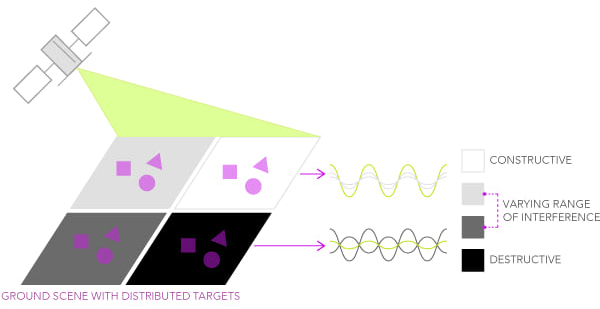

import json
from functools import partial
import holoviews as hv
import intake
import matplotlib.pyplot as plt
import numpy as np
from holoviews.streams import RangeXY
from scipy.ndimage import uniform_filter
from mrs.catalog import get_intake_url
hv.extension("bokeh")This notebook will provide an empirical demonstration of speckle - how it originates, how it visually and statistically looks like, and some of the most common approaches to filter it.
Speckle is defined as a kind of noise that affects all radar images. Given the multiple scattering contributions originating from the various elementary objects present within a resolution cell, the resulting backscatter signal can be described as a random constructive and destructive interference of wavelets. As a consequence, speckle is the reason why a granular pattern normally affects SAR images, making it more challenging to interpret and analyze them.

Credits: ESRI
Let’s make an example of a cornfield (with a typical backscattering value of about -10 dB). According to the following equation:
\[ \sigma^0 = \frac{1}{\text{area}} \sum_{n \in \text{area}} \sigma_n \]
We should ideally have a uniform discrete sigma naught \(\sigma^0\) value, given that the cornfield pixel is the only individual contributor.
However, since we already learned from the previous notebooks that a pixel’s ground size can be in the order of tens of meters (i.e., 10 meters for Sentinel-1), we can imagine that different distributed targets in the scene contribute to the global backscattered information.
Let´s replicate this behavior with an ideal uniform area constituted by 100 pixels and then by adding 30% of speckle.
ideal_backscatter = -10 # in dB, a typical value for cornfields
width = 12
size = (width, width)
ideal_data = np.full(size, ideal_backscatter)
ideal_data_linear = 10 ** (
ideal_data / 10
) # Convert dB to linear scale for speckle addition
speckle_fraction = 0.3
num_speckled_pixels = int(
size[0] * size[1] * speckle_fraction
) # Rayleigh speckle noise
rng = np.random.default_rng() # make reproducible
speckled_indices = rng.choice(
width * width, num_speckled_pixels, replace=False
) # random indices for speckle
# Initialize speckled data as the same as the ideal data
speckled_data_linear = ideal_data_linear.copy()
speckle_noise = rng.gumbel(scale=1.0, size=num_speckled_pixels)
speckled_data_linear.ravel()[speckled_indices] *= (
speckle_noise # Add speckle to the selected pixels
)
ideal_data_db = 10 * np.log10(ideal_data_linear)
speckled_data_db = 10 * np.log10(speckled_data_linear)
plt.figure(figsize=(16, 10))
# Ideal data
plt.subplot(2, 2, 1)
plt.imshow(ideal_data_db, cmap="gray", vmin=-20, vmax=0)
plt.title("Ideal Backscatter (Cornfield)")
plt.colorbar(label="Backscatter (dB)")
# Speckled data
plt.subplot(2, 2, 2)
plt.imshow(speckled_data_db, cmap="gray", vmin=-20, vmax=0)
plt.title(f"Speckled Backscatter ({int(speckle_fraction * 100)}% of Pixels)")
plt.colorbar(label="Backscatter (dB)")
bins = 25
hist_ideal, bins_ideal = np.histogram(ideal_data_db.ravel(), bins=bins, range=(-20, 0))
hist_speckled, bins_speckled = np.histogram(
speckled_data_db.ravel(), bins=bins, range=(-20, 0)
)
max_freq = max(
hist_ideal.max(), hist_speckled.max()
) # maximum frequency for normalization
# Histogram for ideal data
plt.subplot(2, 2, 3)
plt.hist(ideal_data_db.ravel(), bins=bins, range=(-20, 0), color="gray", alpha=0.7)
plt.ylim(0, max_freq)
plt.title("Histogram of Ideal Backscatter")
plt.xlabel("Backscatter (dB)")
plt.ylabel("Frequency")
# Histogram for speckled data
plt.subplot(2, 2, 4)
plt.hist(speckled_data_db.ravel(), bins=bins, range=(-20, 0), color="gray", alpha=0.7)
plt.ylim(0, max_freq)
plt.title(f"Histogram of Speckled Backscatter ({int(speckle_fraction * 100)}%)")
plt.xlabel("Backscatter (dB)")
plt.ylabel("Frequency")
plt.tight_layout()Figure 1: Synthetic data that emulates speckles in microwave backscattering
We can imagine that the second plot represents a real SAR acquisition over a cornfield, while the first plot represents an ideal uniform SAR image over a cornfield land (no speckle). The introduction of a simulated 30% speckle noise could be related to the presence of distributed scatterers of any sort present in the scene, which would cause a pixel-to-pixel variation in terms of intensity.
All the random contributions (such as the wind) would result in a different speckle pattern each time a SAR scene is acquired over the same area. Many subpixel contributors build up a complex scattered pattern in any SAR image, making it erroneous to rely on a single pixel intensity for making reliable image analysis. In order to enhance the degree of usability of a SAR image, several techniques have been put in place to mitigate speckle. We will now show two of the most common approaches: the temporal and the spatial filter.
7.1 Lake Neusiedl data
We load a dataset that contains the CORINE land cover and Sentinel-1 \(\sigma^0_E\) at a 20 meter resolution. This is the same data presented in notebook 6.
url = get_intake_url()
cat = intake.open_catalog(url)
fused_ds = cat.speckle.read().compute()
fused_dsWe also create the same dashboard for backscatter of different landcover types over time. In order to make this code reusable and adaptable we will define the following function plot_variability, which allows the injection of a spatial and/or temporal filter. It is not important to understand all the code of the following cell!
# Load encoding
with cat.corine_cmap.read()[0] as f:
color_mapping_data = json.load(f)
# Get mapping
color_mapping = {item["value"]: item for item in color_mapping_data["land_cover"]}
# Get landcover codes present in the image
present_landcover_codes = np.unique(
fused_ds.land_cover.values[~np.isnan(fused_ds.land_cover.values)].astype(int)
)
def load_image(var_ds, time, land_cover, x_range, y_range, filter_fun_spatial=None):
"""Callback Function Landcover.
Parameters
----------
time: panda.datetime
time slice
landcover: int
land cover type
x_range: array_like
longitude range
y_range: array_like
latitude range
Returns
-------
holoviews.Image
"""
if time is not None:
var_ds = var_ds.sel(time=time)
if land_cover == "\xa0\xa0\xa0 Complete Land Cover":
sig0_selected_ds = var_ds.sig0
else:
land_cover_value = int(land_cover.split()[0])
mask_ds = var_ds.land_cover == land_cover_value
sig0_selected_ds = var_ds.sig0.where(mask_ds)
if filter_fun_spatial is not None:
sig0_np = filter_fun_spatial(sig0_selected_ds.values)
else:
sig0_np = sig0_selected_ds.values
# Convert unfiltered data into Holoviews Image
img = hv.Dataset(
(sig0_selected_ds["x"], sig0_selected_ds["y"], sig0_np), ["x", "y"], "sig0"
)
if x_range and y_range:
img = img.select(x=x_range, y=y_range)
return hv.Image(img)
def plot_variability(var_ds, filter_fun_spatial=None, filter_fun_temporal=None):
robust_min = var_ds.sig0.quantile(0.02).item()
robust_max = var_ds.sig0.quantile(0.98).item()
bin_edges = [
i + j * 0.5
for i in range(int(robust_min) - 2, int(robust_max) + 2)
for j in range(2)
]
land_cover = {"\xa0\xa0\xa0 Complete Land Cover": 1}
land_cover.update(
{
f"{int(value): 02} {color_mapping[value]['label']}": int(value)
for value in present_landcover_codes
}
)
time = var_ds.sig0["time"].values
rangexy = RangeXY()
if filter_fun_temporal is not None:
var_ds = filter_fun_temporal(var_ds)
load_image_ = partial(
load_image, var_ds=var_ds, filter_fun_spatial=filter_fun_spatial, time=None
)
dmap = (
hv.DynamicMap(load_image_, kdims=["Landcover"], streams=[rangexy])
.redim.values(Landcover=land_cover)
.hist(normed=True, bins=bin_edges)
)
else:
load_image_ = partial(
load_image, var_ds=var_ds, filter_fun_spatial=filter_fun_spatial
)
dmap = (
hv.DynamicMap(load_image_, kdims=["Time", "Landcover"], streams=[rangexy])
.redim.values(Time=time, Landcover=land_cover)
.hist(normed=True, bins=bin_edges)
)
image_opts = hv.opts.Image(
cmap="Greys_r",
colorbar=True,
tools=["hover"],
clim=(robust_min, robust_max),
aspect="equal",
framewise=False,
frame_height=500,
frame_width=500,
)
hist_opts = hv.opts.Histogram(width=350, height=555)
return dmap.opts(image_opts, hist_opts)Now, lets work on the real-life dataset to see how speckle actually looks like.
plot_variability(fused_ds)Figure 2: Lake Neusiedl \(\sigma^0_E\) without any filter.
The speckle noise typically appears as a “salt-and-pepper” pattern. Also, please note the distribution of backscatter for each land cover. Even though speckle is known for following non-normal distributions (i.e., Rayleigh distribution for amplitude in the linear domain, and the Gumple for intensity in the log domain), we can assume that due to the Central Limit Theorem, the overall backscatter means (dB) tend to follow a Gaussian distribution.
We can mitigate speckle (it is impossible to remove it completely) by following approaches such as: - spatial filtering - taking mean backscatter value over the same land cover, or - temporal filtering - taking the average backscatter value over some time period.
Either way, one pixel is never representative of ground truth! Therefore we need to look at samples and distributions.
7.2 Spatial filtering
We first introduce a common spatial filter. The Lee filter is an adaptive speckle filter. The filter works using a kernel window with a configurable size, which refers to the dimensions of the neighborhood over which the filter operates. The kernel slides across the data, applying the smoothing operation at each pixel position of the image. It follows three assumptions:
- SAR speckle is modeled as a multiplicative noise - the brighter the area the noisier the data.
- The noise and the signal are statistically independent of each other.
- The sample mean and sample variance of a pixel is equal to its local mean and local variance.
This approach comes with some limitations: it reduces the spatial resolution of the SAR image.
Let’s build up a function for applying a Lee filter with a kernel window size of 7 (do not forget to switch back to linear units before doing this computation and to dB after it):
def lee_filter(raster, size=7):
"""Parameters
raster: ndarray
2D array representing the noisy image (e.g., radar image with speckle)
size: int
Size of the kernel window for the filter (must be odd, default is 7)
Returns
-------
filtered_image (ndarray): The filtered image with reduced speckle noise
"""
raster = np.nan_to_num(raster)
raster = 10 ** (raster / 10)
# Mean and variance over local kernel window
mean_window = uniform_filter(raster, size=size)
mean_sq_window = uniform_filter(raster**2, size=size)
variance_window = mean_sq_window - mean_window**2
# Noise variance estimation (this could also be set manually)
overall_variance = np.var(raster)
# Compute the Lee filter
weights = variance_window / (variance_window + overall_variance)
return 10 * np.log10(mean_window + weights * (raster - mean_window))plot_variability(fused_ds, filter_fun_spatial=lee_filter)Figure 3: Lake Neusiedl \(\sigma^0_E\) with a Lee filter applied.
7.3 Temporal filtering
Temporal filtering would involve taking the average of all previous (past) observations for each pixel. This approach comes with some limitations: it takes out the content-rich information tied to the temporal variability of backscatter.
def temporal_filter(raster):
"""Parameters
raster: ndarray
3D array representing the noisy image over time
(e.g., radar image with speckle)
Returns
-------
filtered_image (ndarray): The filtered image with reduced speckle noise
"""
return raster.mean("time")plot_variability(fused_ds, filter_fun_temporal=temporal_filter)Figure 4: Lake Neusiedl \(\sigma^0_E\) with a temporal filter applied.
Let´s observe the histograms of the two plots. Especially in the region around the lake, it is clear that the distribution is now less dispersed and more centered around a central value.